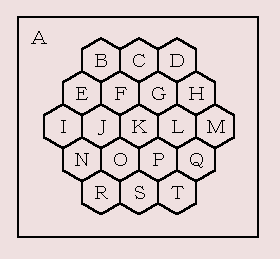

パズル「Four Four's」と記法の変換
今回は Puzzle DE Programming で取り上げた 数字のパズル：Four Four's を Lisp で解いてみましょう。
[問題]
数字 4 を 4 つと＋,－,×,÷,( ,) を使って、答えが 1 から 10 になる式を作りなさい。数字は4 だけではなく、44 や 444 のように合体させてもよい。また、－を符号として使うことは禁止する。
数字の 4 を 4 つ使うので Four Four's という名前なのだと思います。M.Kamada さんによると、日本ではそのまんま「4 つの 4」などと呼ばれているそうです。(Guest Book No.151)
●数式のパターン
Puzzle DE Programming では Perl を使いましたが、Lisp でも簡単に解くことができます。Perl の場合は文字列で数式を作成し、それを eval で評価しました。Lisp では数式を S 式で組み立て、それを eval で評価すればいいわけです。Four Four's の場合、4 つの数値に 3 つの演算子だけなので、数式のパターンは次の 5 種類しかありません。
(1) (4 Y 4) X (4 Z 4)
(2) 4 X (4 Y (4 Z 4))
(3) ((4 Z 4) Y 4) X 4
(4) 4 X ((4 Z 4) Y 4)
(5) (4 Y (4 Z 4)) X 4
私達がふつうに式を書く場合、1 + 2 のように演算子を真ん中に置きます。この書き方を中置記法といいます。Lisp の場合、演算子を前に置く前置記法で数式を表しています。これらの数式を前置記法で表すと、次のようになります。
(1) (4 Y 4) X (4 Z 4) => (X (Y 4 4) (Z 4 4))
(2) 4 X (4 Y (4 Z 4)) => (X 4 (Y 4 (Z 4 4)))
(3) ((4 Z 4) Y 4) X 4 => (X (Y (Z 4 4) 4) 4)
(4) 4 X ((4 Z 4) Y 4) => (X 4 (Y (Z 4 4) 4))
(5) (4 Y (4 Z 4)) X 4 => (X (Y 4 (Z 4 4)) 4)
あとは、X, Y, Z に演算子 +, -, *, / を入れて数式を計算すればいいわけです。Four Four's は数字を合体できるので、数字が 3 つで演算子が 2 つ、数字が 2 つで演算子がひとつ、というパターンもあります。演算子がひとつの場合は簡単ですね。演算子が 2 つの場合は、次の式になります。
(A) (a Y b) X c => (X (Y a b) c)
(B) a X (b Y c) => (X a (Y b c))
a, b, c が数字で X, Y が演算子を表しています。数字は 4 か 44 になります。この場合、a, b, c の組み合わせを生成する必要があります。組み合わせを (a, b, c) で表すと、(4, 4, 44), (4, 44, 4), (44, 4, 4) の 3 通りとなります。これと演算子の組み合わせにより数式を生成して、答えを求めてチェックします。
●プログラム
数式の組み立てはバッククオートマクロを使えば簡単です。プログラムは次のようになります。
List 1 : 4 が 4 つの場合
(defun search-four ()
(let ((op '(+ - * /)) n)
(dolist (x op)
(dolist (y op)
(dolist (z op)
(dolist (expr `((,x (,y 4 4) (,z 4 4))
(,x 4 (,y 4 (,z 4 4)))
(,x (,y (,z 4 4) 4) 4)
(,x 4 (,y (,z 4 4) 4))
(,x (,y 4 (,z 4 4)) 4)))
(eval-expr expr)))))))
演算子は変数 x, y, z にセットされているので、バッククオートの中ではコンマ ( , ) を使って変数を評価していることに注意してください。組み立てた数式の計算は関数 eval-expr で行います。
List 2 : 数式の評価
(defun eval-expr (expr)
(let ((n (handler-case (eval expr)
(division-by-zero () 0))))
(if (and (integerp n) (<= 1 n 10))
(push expr (aref *table* n)))))
数式を計算する場合、0 で除算するとエラーが発生します。そこで、handler-case で division-by-zero を捕捉したら 0 を返すようにします。結果は配列 *table* に格納します。これはスペシャル変数として定義します。
Common Lisp の場合、除算で割り切れない場合は分数になるので、述語 integerp で結果が整数値であることを確認します。あとは、結果が 1 以上 10 以下であれば、数式 expr を *table* に格納します。
マクロ push は setf と同様に、データの格納先をアクセス関数で指定することができます。この場合、配列 *table* の n 番目の要素に数式 expr がプッシュされます。Lisp の場合、配列はデフォルトで nil に初期化されるので、push を使えば複数の数式をリストに格納することができます。
あとのプログラムは簡単なので、プログラムリストをご覧ください。
●実行結果
プログラムを実行すると、全部で 100 通りの式が出力されます。このプログラムでは重複解のチェックを行っていないので、多数の式が出力されることに注意してください。たとえば、5 と 6 の数式を示しましょう。
(/ (+ 4 (* 4 4)) 4) = 5
(/ (+ (* 4 4) 4) 4) = 5
(+ 4 (/ (+ 4 4) 4)) = 6
(+ (/ (+ 4 4) 4) 4) = 6
Lisp の数式をそのまま出力しているので、ちょっと読みにくいかもしれませんね。そこで、次は前置記法を中置記法に変換するプログラムを作ってみましょう。
●プログラムリスト
List 3 : Four Four's 解法プログラム
; 式の評価
(defun eval-expr (expr)
(let ((n (handler-case (eval expr)
(division-by-zero () 0))))
(if (and (integerp n) (<= 1 n 10))
(push expr (aref *table* n)))))
; ４が４つある場合
(defun search-four ()
(let ((op '(+ - * /)) n)
(dolist (x op)
(dolist (y op)
(dolist (z op)
(dolist (expr `((,x (,y 4 4) (,z 4 4))
(,x 4 (,y 4 (,z 4 4)))
(,x (,y (,z 4 4) 4) 4)
(,x 4 (,y (,z 4 4) 4))
(,x (,y 4 (,z 4 4)) 4)))
(eval-expr expr)))))))
; 数字が３つある場合
(defun search-three (a b c)
(let ((op '(+ - * /)) n)
(dolist (x op)
(dolist (y op)
(dolist (expr `((,x (,y ,a ,b) ,c)
(,x ,a (,y ,b ,c))))
(eval-expr expr))))))
; 数字が２つある場合
(defun search-two (a b)
(let ((op '(+ - * /)) n)
(dolist (x op)
(dolist (expr `((,x ,a ,b)))
(eval-expr expr)))))
; 出力
(defun print-answer ()
(dotimes (x 11)
(dolist (expr (aref *table* x))
(format t "~S = ~D~%" expr x))))
; Four Four's の解法
(defun solve ()
(setq *table* (make-array 11))
(search-four)
(search-three 4 4 44)
(search-three 4 44 4)
(search-three 44 4 4)
(search-two 4 444)
(search-two 444 4)
(search-two 44 44)
(print-answer))
●前置記法から中置記法へ
パズル「Four Four's」では Lisp の数式をそのまま出力しました。Lisp は「前置記法 (prefix) 」で数式を表しているため、私達がふつうに使っている「中置記法 (infix) 」とは異なります。そこで、今回は前置記法から中置記法へ変換するプログラムを作ってみましょう。
●カッコを残すとめっちゃ簡単
前置記法から中置記法へ変換する場合、冗長なカッコを取り除かないでよければ、とても簡単に変換することができます。パズル「Four Four's」で出力した数式は、(op num1 num2) の形式でしたね。中置記法に変換するには、これを (num1 op num2) にするだけでいいのです。プログラムは次のようになります。
List 4 : 前置から中置へ変換 (1)
(defun prefix-to-infix (expr)
(if (atom expr)
expr
(list (prefix-to-infix (second expr))
(first expr)
(prefix-to-infix (third expr)))))
引数 num1 と num2 はリストの場合があるので、関数 prefix-to-infix を再帰呼び出して記法を変換する必要があります。最初に expr をチェックして、リストでなければ expr をそのまま返します。これが再帰の停止条件になります。リストの場合は記法の変換を行います。prefix-to-infix を再帰呼び出しして引数を中置記法に変換します。そして、演算子を引数の間にセットします。
プログラムはこれで完成です。それでは実行してみましょう。
(prefix-to-infix '(* (+ 1 2) (- 3 4)))
=> ((1 + 2) * (3 - 4))
(prefix-to-infix '(* (+ (- 1 2) 3) 4))
=> (((1 - 2) + 3) * 4)
(prefix-to-infix '(+ (+ 1 2) (+ 3 4)))
=> ((1 + 2) + (3 + 4))
冗長なカッコが付いていますが、きちんと前置記法から中置記法へ変換されています。
●冗長なカッコを取り除く (修正 2011/06/18)
冗長なカッコは、演算子の優先度を考慮することで取り除くことができます。最初に、パズル「Four Four's」で使用する演算子の優先度の重みを定義します。
List 5 : 演算子の重み
(defun weight (op)
(case op
(+ 1)
(- 1)
(* 2)
(/ 2)
(t 9))) ; 認識不能
たとえば、数式が (* (+ 1 2) (/ 3 4)) の場合を考えてみましょう。
(* (+ 1 2) (/ 3 4)) => ((1 + 2) * (3 / 4)) => ((1 + 2) * 3 / 4)
演算子 * と + では、+ の方の重みが小さいですね。この場合、+ の方はカッコをはずすことができません。次の演算子 / は * と重みが同じなので、カッコをはずすことができます。余分なカッコは、関数 append を使うと簡単に取り除くことができます。次の例を見てください。
(append '(1 2) '(3 4) '((5 6)))
=> (1 2 3 4 (5 6))
append はリストを結合する基本的な関数です。数式 (* (+ 1 2) (/ 3 4)) の場合、演算子 * と数式 (1 + 2) にカッコを付けて append すると、数式 (3 / 4) のカッコをはずすことができます。
(append '((1 + 2)) '(*) '(3 / 4))
=> ((1 + 2) * 3 / 4)
つまり、重みが小さい演算子を含む数式は、カッコを付けてから append すればいいわけです。基本的な処理はこれでいいのですが、ひとつだけ問題があります。それは演算子が - と / のときにカッコをはずす場合です [修正]。次の例を見てください。
(- 1 (- 2 (- 3 4))) => (1 - (2 - (3 - 4)))
=> (1 - (2 - 3 + 4))
=> (1 - 2 + 3 - 4)
(/ 1 (/ 2 (/ 3 4))) => (1 / (2 / (3 / 4)))
=> (1 / (2 / 3 * 4))
=> (1 / 2 * 3 / 4)
このように、演算子が - のときはカッコ内の + と - を、/ のときはカッコ内の * と / を反転させないといけません。この処理は mapcar を使うと簡単に実現できます。
(mapcar #'(lambda (x) (case x (+ '-) (- '+) (t x)))
'(2 - 3 + 4))
=> (2 + 3 - 4)
(mapcar #'(lambda (x) (case x (+ '-) (- '+) (t x)))
'(2 * (3 - 4)))
=> (2 * (3 - 4))
リストの要素が + であれば - に、- であれば + に変更します。それ以外の要素はそのまま出力します。mapcar はリストのトップレベルの要素に対してラムダ式を適用するので、たとえば、数式 (2 * (3 - 4)) の - を + に変更することはありません。/ の処理も同様に行うことができます。
●プログラム
プログラムは次のようになります
List 6 : 前置から中置へ変換 (2)
(defun prefix-to-infix (expr &optional (w1 0))
(if (atom expr)
(list expr)
(let ((w2 (weight (first expr))))
(if (< w2 w1)
(list (prefix-to-infix-sub expr w2))
(prefix-to-infix-sub expr w2)))))
; 変換
(defun prefix-to-infix-sub (expr w)
(append (prefix-to-infix (second expr) w)
(list (first expr))
(case (first expr) ; 修正 (2011/06/11)
((-)
(mapcar #'(lambda (x) (case x (+ '-) (- '+) (t x)))
(prefix-to-infix (third expr) w)))
((/)
(mapcar #'(lambda (x) (case x (* '/) (/ '*) (t x)))
(prefix-to-infix (third expr) w)))
(t (prefix-to-infix (third expr) w)))))
数式を変換する処理は関数 prefix-to-infix-sub で行います。演算子が - の場合、引数 expr の第 3 要素を変換したあとで、mapcar を使って数式の + と - を反転させます。演算子が / の場合も同じように処理します。あとは、要素を append で結合するだけです。演算子はリストに入れることをお忘れなく。
関数 prefix-to-infix で、引数 expr がアトムの場合はリストに格納して返すことに注意してください。expr がリストの場合は、関数 weight で演算子の重みを求めて、その前の演算子の重み w1 と比較します。w1 が大きい場合、カッコをはずすことはできません。prefix-to-infix-sub で変換した数式をリストに格納して返します。w2 が w1 以上であれば、カッコをはずすことができます。この場合は prefix-to-infix-sub で変換した数式を返すだけです。
●実行例
プログラムはこれで完成です。それでは実行してみましょう。
(prefix-to-infix '(+ (+ 1 2) (+ 3 4)))
=> (1 + 2 + 3 + 4)
(prefix-to-infix '(- 1 (- 2 (- 3 4))))
=> (1 - 2 + 3 - 4)
(prefix-to-infix '(/ 1 (/ 2 (/ 3 4))))
=> (1 / 2 * 3 / 4)
(prefix-to-infix '(- 1 (* 2 (- 3 4))))
=> (1 - 2 * (3 - 4))
今度は、冗長なカッコが取り除かれています。パズル「Four Four's」で解を出力するとき、関数 prefix-to-infix を使って記法を変換すれば、私達が見慣れている数式で解を表示することができます。
●中置記法から前置記法へ
今度は逆に、中置記法を前置記法に変換してみましょう。変換にはいくつかの方法がありますが、数式を左から右へ順番に読み込んでいく方法にしましょう。この場合、演算子 (operator) と被演算数 (operand) を格納する 2 本のスタックを用いると、簡単に変換することができます。
●変換過程
たとえば、数式 (1 + 2 * 3 - 4) は次のように変換することができます。
表 1 : スタックの変化
| NO | expr | operator | operand |
|---|
| 1 | (1 + 2 * 3 - 4) | () | () |
| 2 | (* 3 - 4) | (+) | (2 1) |
| 3 | (- 4) | (* +) | (3 2 1) |
| 4 | (- 4) | (+) | ((* 2 3) 1) |
| 5 | () | (- +) | (4 (* 2 3) 1) |
| 6 | () | (+) | ((- (* 2 3) 4) 1) |
| 7 | () | () | ((+ 1 (- (* 2 3) 4))) |
スタックは演算子を格納する operator と被演算数を格納する operand の 2 本を用意します。最初 (No.1) はどちらのスタックも空の状態です。数式を左から右へ読み込み、数値は operand にプッシュして、演算子は operator にプッシュします。
No.2 は、数式を 1 + 2 まで読んだ状態です。ここで、次の演算子 * と operator の先頭にある演算子 + の優先順位を比較します。この場合、* の方が高いですね。したがって、2 は 1 と足し算してはいけないのです。演算子 * を operator に、3 を operand にプッシュして、数式の読み込みを続けます。
No.3 の状態で、同様に演算子の優先順位を比較します。今度は operator の先頭にある * の方が高いですね。この場合は 2 と 3 を掛け算していいわけです。operand から 2 と 3 を取り出して、前置記法の数式 (* 2 3) を組み立てます。作成した数式は operand にプッシュします。そして、数式の読み込みを続けます。
No.5 は最後まで数式を読み込んだ状態です。このあとは、operator に残っている演算子で数式を組み立てます。operator から演算子をひとつ、operand から被演算数をふたつ取り出して、前置表記法の数式を組み立て、それをまた operand にプッシュします。これを operator に演算子が残っている間繰り返します。
No.6 は演算子 - を処理した状態です。4 と (* 2 3) を operand から取り出して、数式 (- (* 2 3) 4) を組み立て、それを operand にプッシュします。No.7 が演算子 + を処理した状態です。ここで operator が空になったので、operand に格納されている数式が、求める前置記法の数式となります。
●プログラム
それではプログラムを作りましょう。カッコの処理はまだ説明していませんが、これは再帰呼び出しを使うと簡単に実現できます。プログラムは次のようになります。
List 7 : 中置から前置へ変換
(defun infix-to-prefix (expr)
(if (atom expr) expr
(infix-to-prefix-sub expr)))
(defun infix-to-prefix-sub (expr)
(let (operands operators term1 term2)
(push (infix-to-prefix (pop expr)) operands)
; 数式の読み込みと変換
(loop
(push (pop expr) operators)
(push (infix-to-prefix (pop expr)) operands)
(cond ((null expr) (return))
((<= (weight (car expr))
(weight (car operators)))
(setq term2 (pop operands)
term1 (pop operands))
(push (list (pop operators) term1 term2) operands))))
; 残っている演算子を処理
(while operators
(setq term2 (pop operands)
term1 (pop operands))
(push (list (pop operators) term1 term2) operands))
; 結果を返す
(first operands)))
数式を変換する処理は関数 infix-to-prefix-sub で行います。関数 infix-to-prefix は、引数 expr がアトムであれば expr をそのまま返し、リストであれば infix-to-prefix-sub を呼び出します。infix-to-prefix-sub では、数式から要素を取り出すときに infix-to-prefix を適用します。その要素がリスト（数式）であれば、infix-to-prefix-sub が再帰呼び出しされて、前置記法に変換されたリストが返ってきます。これでカッコを処理することができます。
infix-to-prefix-sub の処理内容は、変換過程で説明したことをそのままプログラムしただけです。難しいところはとくにないと思うので、説明は省略します。リストを読んでくださいね。
●実行例
簡単な実行例を示します。
(infix-to-prefix '(1 + 2 * 3 - 4))
=> (+ 1 (- (* 2 3) 4))
(infix-to-prefix '((1 + 2) * 3 - 4))
=> (- (* (+ 1 2) 3) 4)
(infix-to-prefix '((1 + 2) * (3 - 4)))
=> (* (+ 1 2) (- 3 4))
正常に動作していますね。記法は前置と中置のほかに「後置記法 (postfix) 」があります。後置記法も簡単に変換することができるので、興味のある方はプログラムを作ってみてください。
ちょっと寄り道
■パズル「地図の配色問題」
今回は、Puzzle DE Programming で取り上げた 地図の配色問題 を Lisp で解いてみましょう。同じ問題では面白くないので、下図に示す簡単な地図を塗り分けてみます。

Puzzle DE Programming では Perl でプログラミングしました。このときは配列を使いましたが、今度は Lisp でプログラミングするわけですから、Lisp らしく各領域を「シンボル」で表すことにします。隣の地域を表す隣接リストは属性リストに格納し、地域の色はシンボルのスペシャル変数にセットします。
■setq と set の違い
最初に、スペシャル変数の値を更新するときに使用する関数 set を説明します。
set symbol value
set は symbol のスペシャル変数の値を value に変更し、その結果として value を返します。ここで、set は setq と違って引数を評価することと、レキシカル変数には値を代入できないことに注意してください。setq はスコープ規則に従ってレキシカル変数やスペシャル変数に値を代入しますが、set はスペシャル変数にのみ値を代入するのです。次の例を見てください。
(setq a 10) => 10
(let ((a 100))
(set 'a 1000)
(print a))
=> 100
a => 1000
setq で変数 a に 10 を代入します。この場合、a はスペシャル変数として扱われます。次に、let でレキシカル変数 a を定義し、set で値を代入します。この場合、set はレキシカル変数ではなくスペシャル変数 a の値を変更します。したがって、print で a を表示すると 100 になります。そして、let が終了したあとで a の値を見ると、1000 に更新されていることがわかります。
ここで少し脱線します。今回説明した set の仕様は Common Lisp の場合です。以前の Lisp 処理系では、setq と同じく set は変数に値を代入するだけです。つまり、setq は set quote の意味で、(setq a 10) は (set 'a 10) と同じだったのです。set の仕様は Common Lisp で大きく変わりました。ご注意くださいませ。
set と対になる関数が symbol-value です。
symbol-value symbol
symbol-value は symbol のスペシャル変数の値を取り出します。set と同様に、レキシカル変数にアクセスすることはできません。次の例を見てください。
(setq a 10) => 10
(let ((a 100))
(print (symbol-value 'a)))
=> 10
symbol-value はスペシャル変数の値を取り出すので、100 ではなく 10 が表示されます。
■プログラム
それではプログラムを作ります。色はシンボル (red や blue など) で表し、まだ色を塗っていない状態を nil で表すことにします。たとえば、地域 K を blue で塗るのであれば、隣接の地域で blue が使われていないことを確認すればいいわけです。探索方法は単純なバックトラックです。
List 8 : 地図の配色問題
; 隣接リスト（属性リストにセット）
(setf (get 'A 'neighbors) '(B C D E F G H I J K L M N O P Q R S T)
(get 'B 'neighbors) '(A C E F)
(get 'C 'neighbors) '(A B D F G)
(get 'D 'neighbors) '(A C G H)
(get 'E 'neighbors) '(A B F I J)
(get 'F 'neighbors) '(B C E G J K)
(get 'G 'neighbors) '(C D F H K L)
(get 'H 'neighbors) '(A D G L M)
(get 'I 'neighbors) '(A E J N)
(get 'J 'neighbors) '(E F I K N O)
(get 'K 'neighbors) '(F G J L O P)
(get 'L 'neighbors) '(G H K M P Q)
(get 'M 'neighbors) '(A H L Q)
(get 'N 'neighbors) '(A I J O R)
(get 'O 'neighbors) '(J K N P R S)
(get 'P 'neighbors) '(K L O Q S T)
(get 'Q 'neighbors) '(A L M P T)
(get 'R 'neighbors) '(A N O S)
(get 'S 'neighbors) '(A O P R T)
(get 'T 'neighbors) '(A P Q S))
; 領域
(defvar *regions* '(A B C D E F G H I J K L M N O P Q R S T))
; 初期化
(defun init-region ()
(dolist (region *regions*) (set region nil)))
; 解を出力
(defun print-answer ()
(map nil #'(lambda (x) (format t "~S: ~S~%" x (symbol-value x))) *regions*)
(throw 'answer nil))
; 探索
(defun color-map (region-list color-list)
(let ((region (car region-list)))
(dolist (color color-list)
(unless (find-if #'(lambda (x) (eq (symbol-value x) color))
(get region 'neighbors))
; 色をセット
(set region color)
(if (null (cdr region-list))
(print-answer)
(color-map (cdr region-list) color-list))
; 元に戻す
(set region nil)))))
; 地図の配色問題を解く
(defun solve ()
(init-region)
(catch 'answer
(color-map *regions* '(blue green red))
(color-map *regions* '(blue green red yellow))))
init-region でシンボルの値を nil に初期化し、color-map で色の塗り分けを行います。使用する色は color-list にセットします。最初に 3 色で試してみて、できなければ 4 色で塗り分けます。隣接する地域のチェックには find-if を使っています。
(find-if #'(lambda (x) (eq (symbol-value x) color))
(get region 'neighbors))
get で属性リストから「隣接リスト」を取り出し、そこに格納されているシンボルのスペシャル変数の値をチェックします。ラムダ式の引数 x には地域を表すシンボルが渡されるので、symbol-value でスペシャル変数の値を取り出して color と比較すればいいわけです。
同じ色が見つからない場合、find-if は nil を返します。この場合、set で region に color を代入して、次の地域の色を決めるため color_map を再帰呼び出します。color と同じ色が見つかったならば違う色を選びます。もし、その地域に色を塗ることができなければ、バックトラックして前の地域で別の色を選択します。
すべての地域の色を決定したら、print-answer で解を出力します。今回は、解をひとつ出力したら探索を終了することにします。catch と throw による大域脱出を使って、いっきに solve へ戻ります。あとは、とくに難しいところはないでしょう。プログラムリストを読んでくださいね。
■実行結果
それでは実行結果を示します。4 色で塗り分けることができました。
 A: blue B: green
C: red D: green
E: red F: blue
G: yellow H: red
I: green J: yellow
K: green L: blue
M: green N: red
O: blue P: red
Q: yellow R: green
S: yellow T: green
A: blue B: green
C: red D: green
E: red F: blue
G: yellow H: red
I: green J: yellow
K: green L: blue
M: green N: red
O: blue P: red
Q: yellow R: green
S: yellow T: green